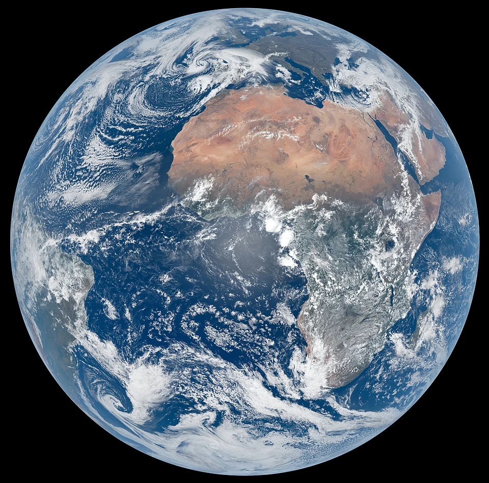

Earth is the third planet from the Sun and the only astronomical object known to harbor life. This is made possible by Earth being an ocean world, the only one in the Solar System sustaining liquid surface water. Almost all of Earth's water is contained in its global ocean, covering 70.8% of Earth's crust. The remaining 29.2% of Earth's crust is land, most of which is located in the form of continental landmasses within Earth's land hemisphere.
Most of Earth's land is at least somewhat humid and covered by vegetation, while large ice sheets at Earth's polar deserts retain more water than Earth's groundwater, lakes, rivers, and atmospheric water combined. Earth's crust consists of slowly moving tectonic plates, which interact to produce mountain ranges, volcanoes, and earthquakes.
About The Earth
- Mass: 5,972,190,000,000,000 billion kg
- Equatorial Diameter: 12,756 km
- Notable Moons: moon
Facts About Earth
- Earth is the only known planet that supports life
- It has liquid water, a suitable atmosphere, and temperatures that allow living organisms to survive.
- About 71% of Earth's surface is covered by water
- Oceans contain about 97% of all water on Earth, while less than 1% is available as fresh water for human use.
- Earth is the third planet from the Sun
- It orbits the Sun at an average distance of about 150 million kilometers (93 million miles).
- Earth rotates and revolves
- One rotation on its axis takes about 24 hours (creating day and night).
- One revolution around the Sun takes about 365.25 days (creating a year).
- Earth has a protective atmosphere
- The atmosphere is mainly nitrogen (78%) and oxygen (21%) and helps regulate temperature, provides air to breathe, and protects life from harmful solar radiation.